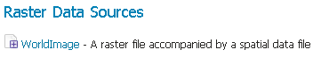
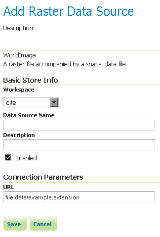

WorldImage¶
A world file is a plain text file used to georeference raster map images. This file (often with an extension of .jgw or .tfw) accompanies an associated image file (.jpg or .tif). Together, the world file and the corresponding image file is known as a WorldImage in GeoServer.
Adding a WorldImage data store¶
By default, WorldImage will be an option in the Raster Data Sources list when creating a new data store.

WorldImage in the list of raster data stores
Configuring a WorldImage data store¶

Configuring a WorldImage data store
| Option | Description |
| Workspace | |
| Data Source Name | |
| Description | |
| Enabled | |
| URL |
Previous: GTOPO30
Next: ImageMosaic